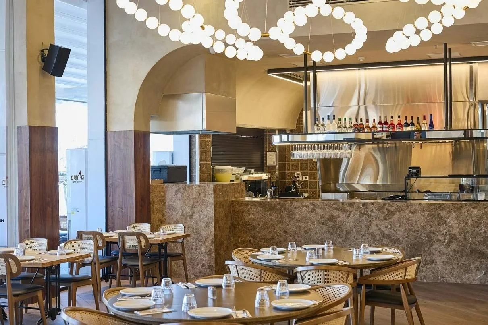
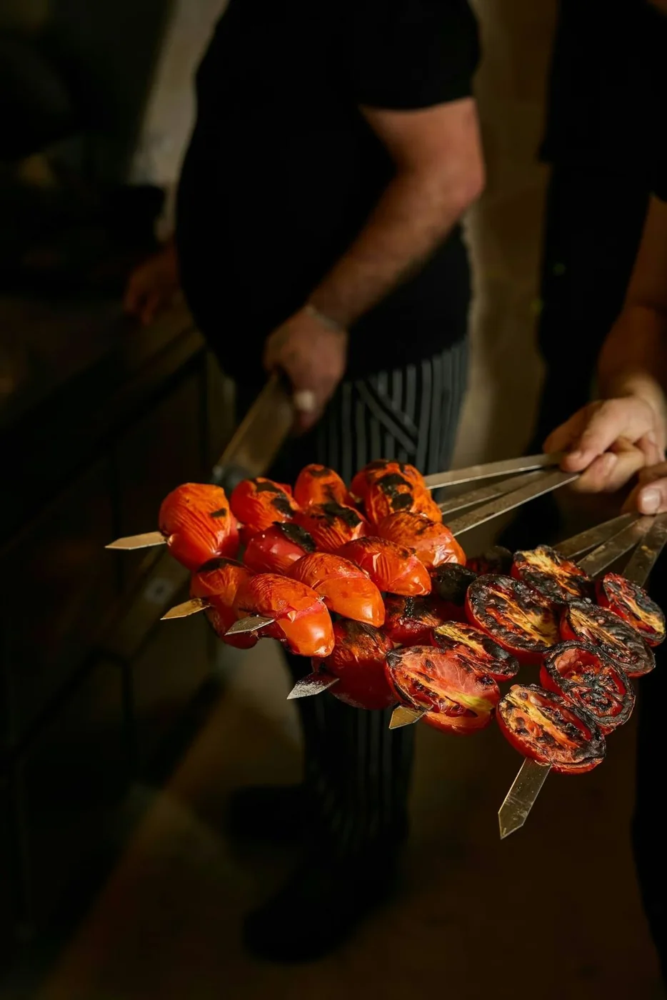
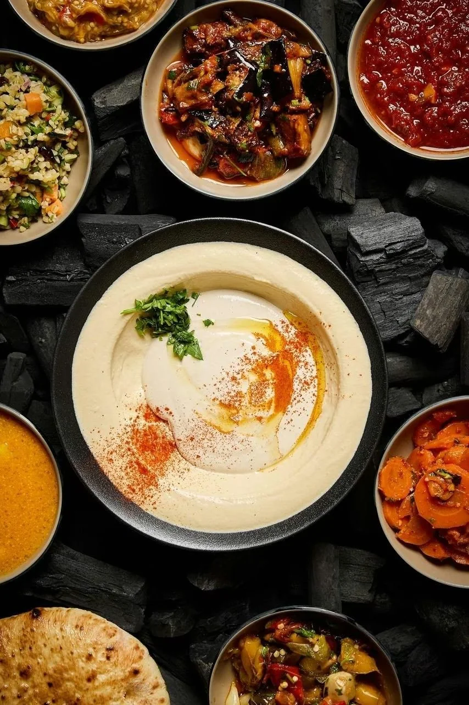
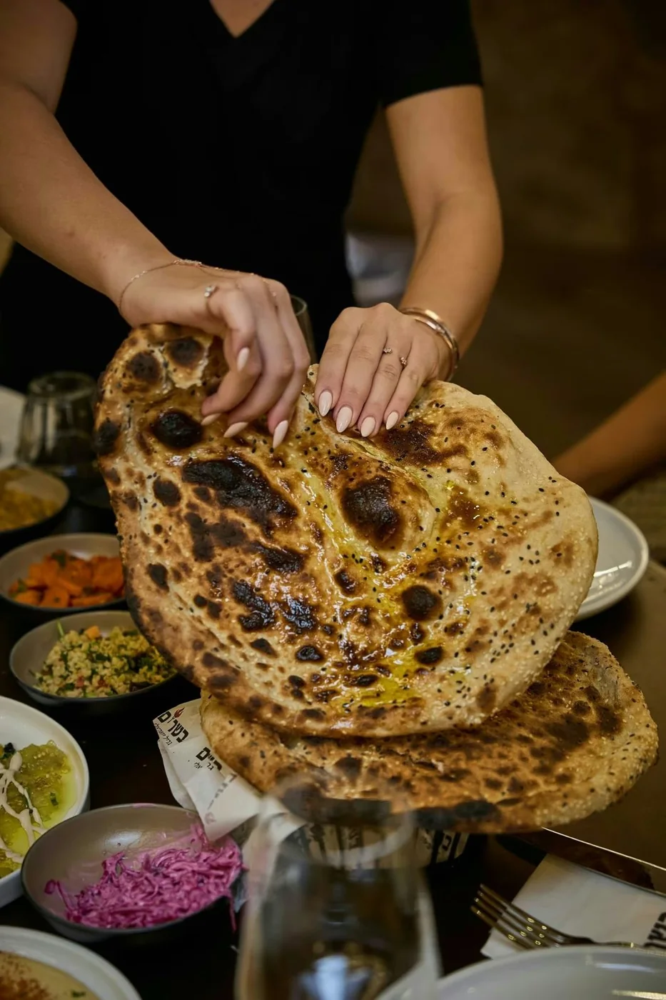
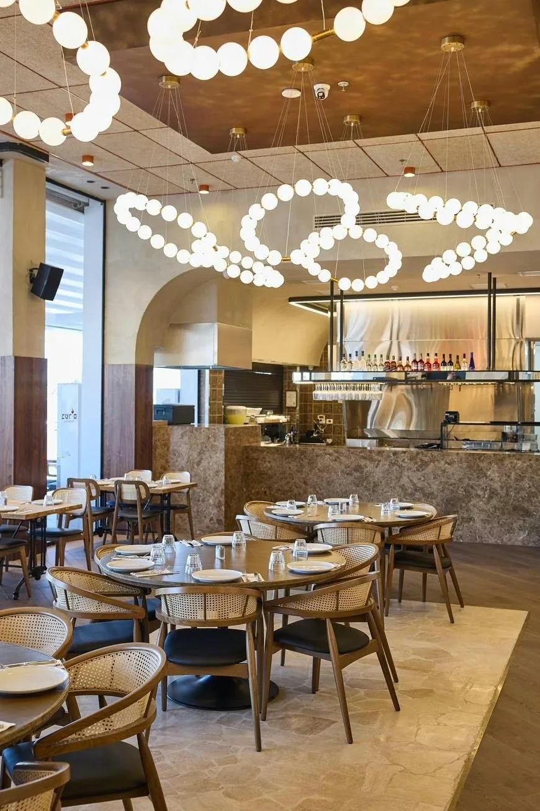
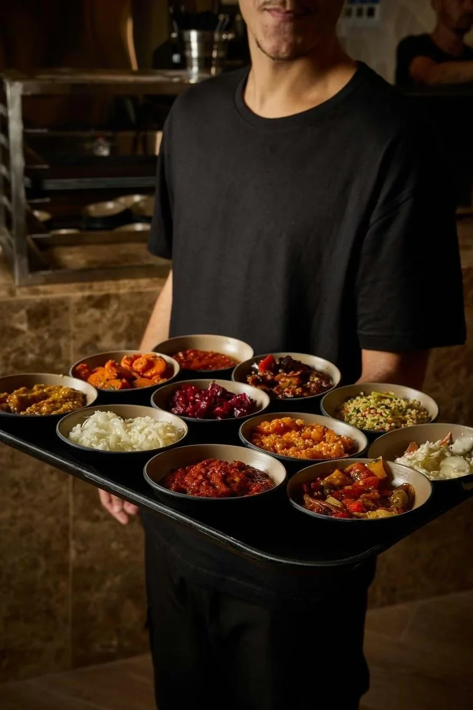
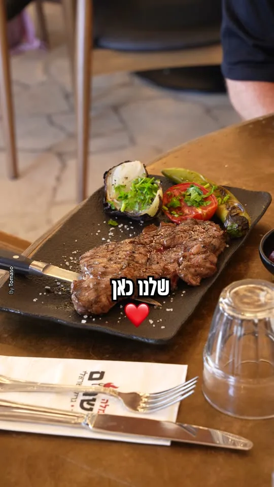
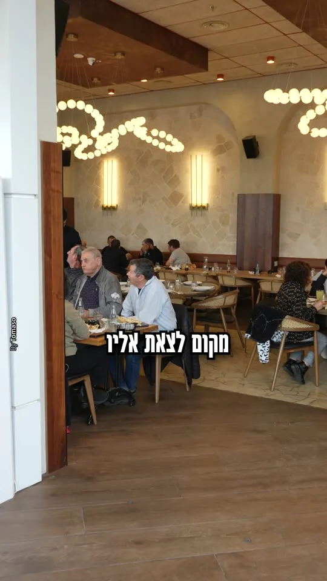
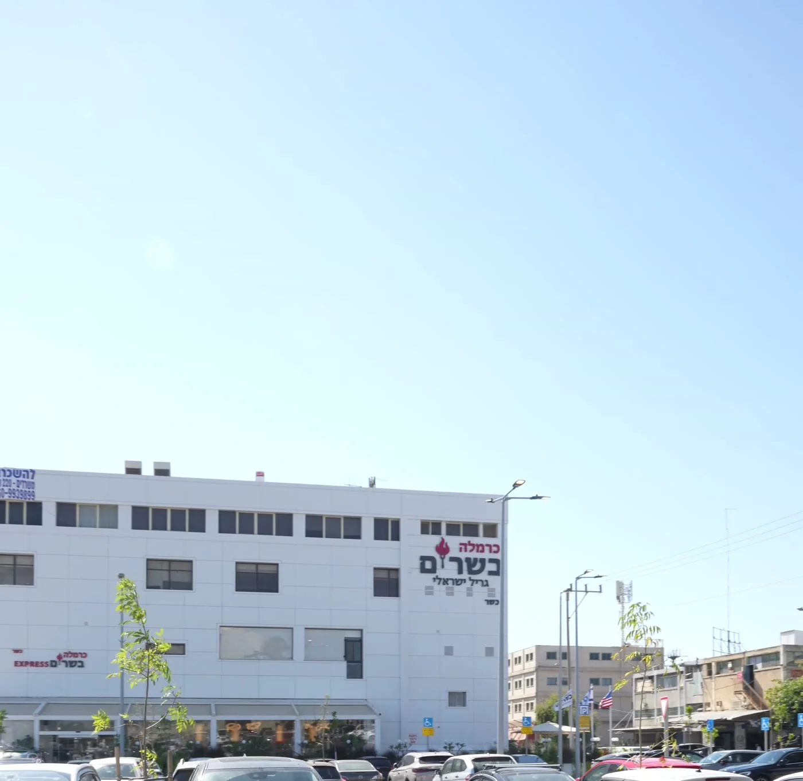

נפגשים בכרמלה.
לאפה מהטאבון. בשר מהגריל. שולחן מלא.
החרושת 16 · אור יהודהכאן מתחילים

אור יהודה · החרושת 16באים רעבים.
באים רעבים.
יושבים טוב.
גריל ישראלי כשר, לאפה חמה ושולחן מלא.

כרמלה בשרים · אור יהודה
פותחים שולחן.
הלאפה חמה. הבשר על האש. אתם בדרך?


מי אנחנו
לאפה חמה מהטאבון.
סלטים באמצע השולחן.
הבשר כבר על האש.
כרמלה בשרים היא מסעדת גריל ישראלי כשרה באור יהודה. חומוס וסלטי הבית לפתיחה, שיפודים ונתחים מהאש, וארוחה טובה עם האנשים שבאתם איתם.
להכיר את כרמלההמסעדה
תיכנסו.
תרגישו את המקום.
הבר, הטאבון, השולחנות והאנשים.
זה המקום להיפגש בו.


קצת מכרמלה.
לגלריה המלאהמהמטבח שלנו
רואים את האש.
הגריל, הטאבון ומה שיוצא מהם.


מהאורחים שלנו
ניפגש
בפעם הבאה.
״מקום מדהים אוכל טעים חניה בשפע ממליצים בחום נחזור״
מירון מלכה · ביקורת בגוגל · 18.10.2026
לכל הביקורות בגוגל ↗מגיעים לכרמלה
יש מקום.
גם לחנות.
החרושת 16, אור יהודה
חניה חינם בשפע ליד המסעדה.
קחו אותי לכרמלה- ראשון עד חמישי
- 11:00 עד 00:00
- שישי
- 11:00 עד חצי שעה לפני כניסת שבת
- מוצאי שבת
- חצי שעה אחרי צאת שבת עד 00:00
